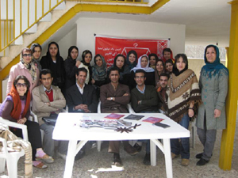

|
|
8 مارس در کنار زاینده رود
يكشنبه18 اسفند 1387
کمپین یک میلیون امضا در اصفهان: برنامه بزرگداشت روز 8 مارس روز جهانی زن، به همت اعضای کمپین یک میلیون امضا در اصفهان و در کنار رودخانه زاینده رود برگزار شد.
در این مراسم که اعضای کمپین از شهرهای تهران، رشت، آمل، کرمانشاه، کردستان و سمیرم در آن شرکت داشتند سه مبحث عمده مورد بحث قرار گرفت:
ابتدا مسئله ساختار کمپین و مباحث مربوط به آن در برنامه صبح و با مشارکت گروهی همه اعضا بررسی شد. در این جلسه که در هوای آزاد و زیر آسمان آفتابی برگزار شد و گزارش مفصل آن در روزهای آینده منتشر خواهد شد،هر یک از اعضا از دیدگاه خود به بررسی این ساختار و مزایا و معایب آن پرداختند.

بعد از ظهر و در دو نوبت به ترتیب در مورد مسئله خشونت های ناموسی و برنامه ی شش ماهه ی آینده کمپین صحبت شد. در برنامه اول ابتدا یکی از اعضای کمیته خشونت های ناموسی به ارائه گزارش از فعالیتهای این کمیته پرداخت و پس از آن اعضای دیگر شهرهای کمپین نظرات و راهکارهای خود را در زمینه برنامه های مشترک در مبارزه با خشونت های ناموسی عنوان کردند .، در حاشیه این برنامه تئاتری در زمینه خشونت های قانونی اجرا شد.
در جلسه پایانی ، برنامه های شش ماهه آینده در شهرهای مختلف مورد بحث و تبادل نظر اعضا قرار گرفت و بر تداوم نشست های سراسری به شکل هدفمند و برنامه ریزی شده تاکید شد.
این برنامه در ساعات پایانی شب در حالی خاتمه یافت، که چهره های خسته ولی امیدوار به تغییر ِ کمپینی ها، برای رسیدن به دیگر برنامه های تدارک دیده شده برای هشت مارس مکان جلسه را ترک کردند. گزارش تفصیلی این نشست به زودی منتشر خواهد شد.